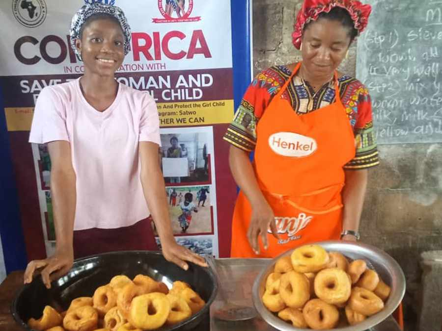

Community Education Centre model
Extending the four-component centre to further communities, and fully equipping the two that already run at Mbube-Ogoja and Victoria-Ikom.


Our plan concerns the development of children in rural Nigeria, and the operational capacity and administration to deliver it — all within the setting of the Community Education Centre model.
The method
Through our Vocational and Skills Acquisition Centres, pilot systems are operated in which children and young people form study teams together with parents, teachers and community members. A skill practised alongside the adults who will employ or finance it is a skill that survives leaving school.
Extending the four-component centre to further communities, and fully equipping the two that already run at Mbube-Ogoja and Victoria-Ikom.
A dedicated children’s hospital, extending the school-clinic model into full paediatric care. [SCOPE AND COST TO BE CONFIRMED]
Purpose-built vocational and skills acquisition centres, equipped across all nine trade areas, with certification and job placement partnerships. [SCOPE AND COST TO BE CONFIRMED]
Alignment
CORAfrica’s programmes are aligned to five United Nations Sustainable Development Goals. Our livelihood strategy seeks to improve access to food, healthcare, education, clean water and skills development for vulnerable households, with particular emphasis on rural women.
Reducing poverty through education, and through soft loans that let a family build an income.
Food security through demonstration farms and school feeding.
Increasing rural women’s access to livelihood opportunities, agricultural resources and women-led enterprise.
Vocational and skills training that leads to sustainable, dignified livelihoods.
Reaching refugee, IDP and host communities together, without distinction.
Working with communities, dioceses, institutions and bilateral organisations rather than around them.